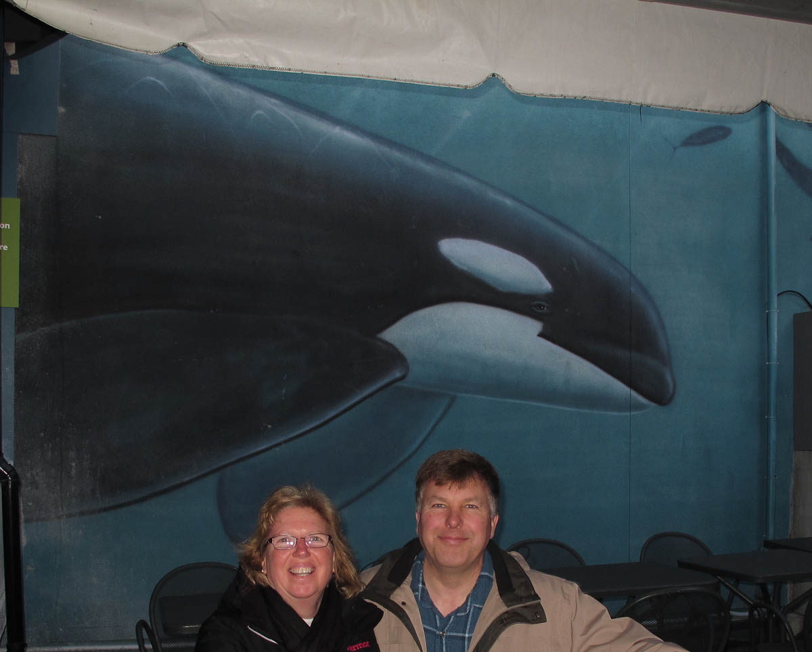
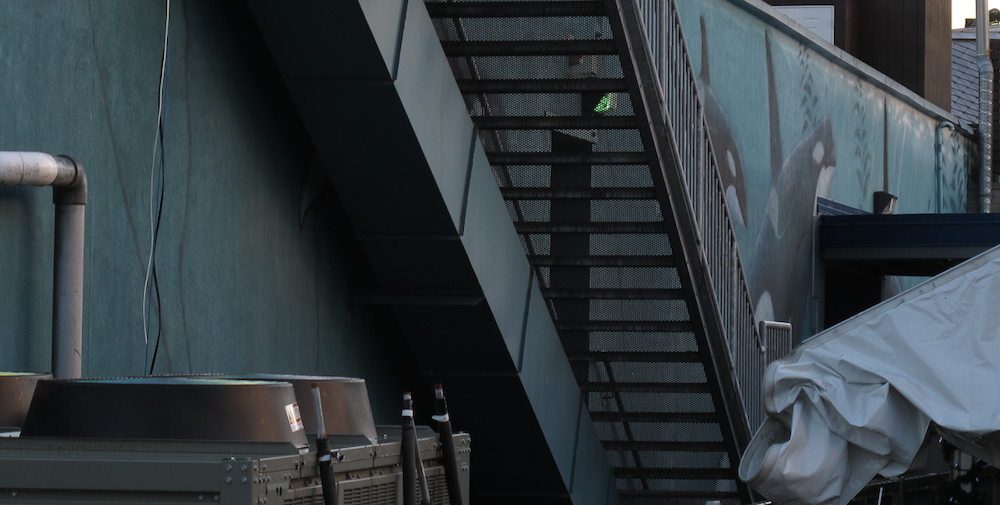

In Search of Wyland Walls
 After getting back from White Rock we thought we would do some sight-seeing on the hop-on hop-off bus but it was done for the day. Being too early for dinner we thought we might as well go to Stanley (of Stanley Cup fame) Park to the aquarium to see Orcas A-30 Subpod. The first thing that struck us regarding the aquarium was all the construction. As we’ve learned, new construction is rarely a good thing in regards to us finding intact murals. We walked around the aquarium and could not see anything so we stopped and asked one of the employees walking around. At first he said the wall was gone, then he said it was partially covered up and not in a visitor accessible area. That did not give us much hope. We thought we would go ahead and walk around anyway and on the back of the aquarium, locked behind two gates we caught a glimpse of it. Covered by new construction and new stairways it was difficult to make out but the blue wall that is the backdrop of most of the murals was unmistakable. After getting in trouble for climbing a fence to take a picture an aquarium worker named Jo came by. She was sympathetic to our cause and knew someone in security and convinced them to let her take us to see the wall and even took the above picture for us. Normally we work pretty hard to get our picture in front of the entire wall but given the circumstances we’re glad to get this picture in front of a section of it.
And here is the best I could do to get a picture of the entire wall (and the one I had to climb the fence for).

Vancouver Aquarium, Canada
Stanley Park
175 Feet Long x 14 Feet High
Dedicated August 15th, 1994
Excerpt from @wylandfoundation on Instagram
Vancouver, British Columbia, was high on Wyland’s list for the West Coast Tour. As a fan of the @vanaqua, Wyland was excited to be given the opportunity to paint a mural there. The other reason for his excitement was that he would be working with Dr. John Ford, one of the most respected authorities on orcas in the world.
“This Whaling Wall was special, not only because of John, but because I wanted to do something in the memory of a great marine biologist named Michael Bigg.” says Wyland. “Michael had worked with me on Whaling Wall 13 in 1987. He had passed away several years before, and I was able to honor his memory with the dedication of the Vancouver Aquarium mural to him and his family.”
“I painted a pod of orca whales, known as the A-30 subpod, that frequented the waters of Robson Bight” says Wyland, who dove with the pod a few years earlier and the experience allowed him to learn so much about the pod–right down to their individual scars and dorsal markings! “The aquarium wall was only 15 feet high, but at more than a hundred feet long, it gave me ample room to capture the beauty of the pod” Wyland said.
Unfortunately, this wall was completely painted over on June 20, 2017.